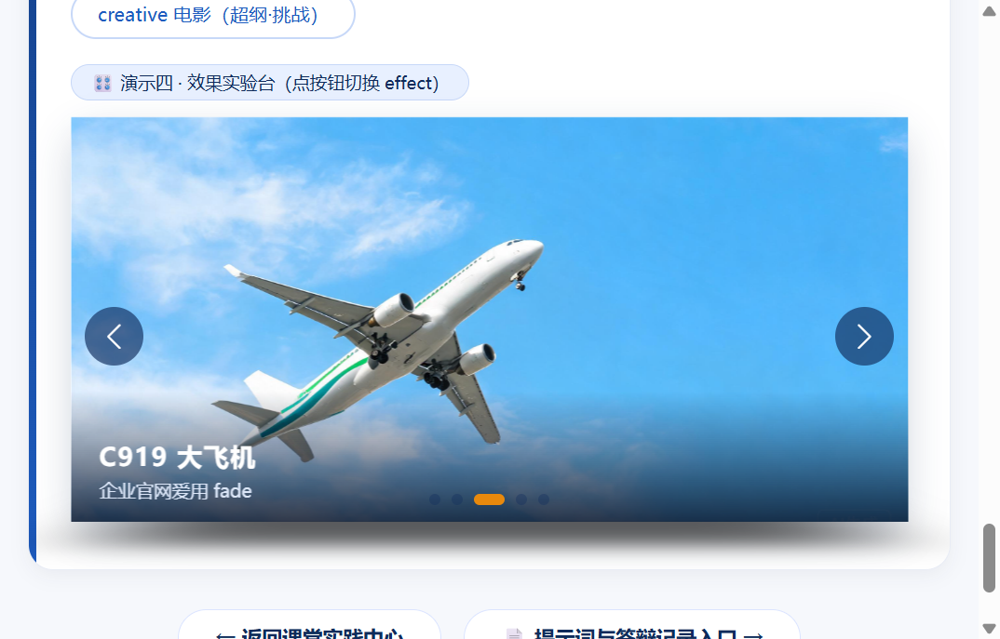
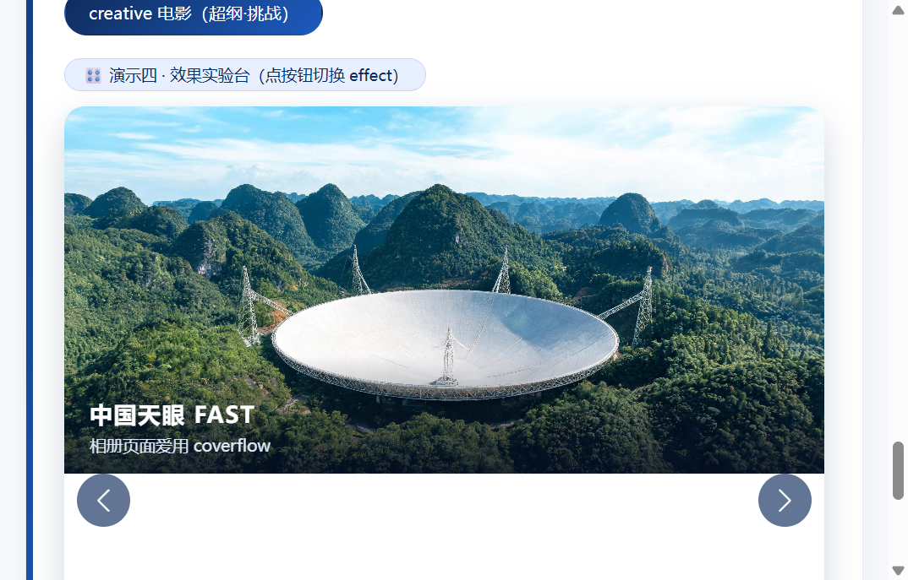

作者：董文博 · 学号 24002120307 · 使用大模型：GLM-5.3-Flash · 记录时间：2026-11-08
本文保留每个任务的提示词往返、最终代码、验证截图与一句话结论，供课堂答辩抽查。
帮我写 new Swiper('#wySw4', { ... }) 的配置：无缝循环播放、3.2 秒自动翻页、圆点分页器、初始效果为 cube。
var wySw4 = new Swiper('#wySw4', {
loop: true,
autoplay: { delay: 3200 },
pagination: { el: '#wyPag4' },
effect: 'cube'
});
上面配置有两个问题：1）用户手动拖动或点按钮之后，自动播放不能停止，要继续翻页；2）圆点分页器要能点击直接跳转到对应页。请补全这两个参数并解释含义。
var wySw4 = new Swiper('#wySw4', {
effect: 'cube', // 初始效果为 cube
loop: true, // ① 无缝循环
autoplay: {
delay: 3200, // ② 3.2 秒自动翻页
disableOnInteraction: false // 手动操作后不停止
},
pagination: {
el: '#wyPag4',
clickable: true // ③ 圆点可点击跳转
}
});

我对照官方示例 swiper/demo/257-effect-creative.html 想做"电影选片"效果：切换时上一张向左移出并带一点旋转倾斜，下一张从右侧放大进场。请给出 Swiper 11 的 effect:'creative' 与 creativeEffect 配置，并解释 transform 里 prev / next 各自定义的是什么状态。
creativeEffect: {
prev: { translate: ['-115%', 0, -220], rotate: [-18, 0, 0] },
next: { translate: ['105%', 0, 0], scale: 1.15 },
limitProgress: 2
}
// prev 描述"上一张"在切换时的位移/旋转/缩放状态；
// next 描述"下一张"的起始状态，随进度归零回到原位。
// translate 的百分号是相对 slide 自身的宽（x）和高（y），
// 第三个值是 z 轴像素距离（配合透视产生远近感）。

为"大国重器光影展"生成第六件展品配图：国产首艘大型邮轮"爱达·魔都号"在金色黄昏的海面上航行，白色船身、标志性红黄涂装烟囱，侧面全景视角，写实摄影风格，横版 16:9。
swiper-imgs/aida_1.jpg（2560×1440，右下角自带"AI生成"水印），slide 结构与其余五件展品一致：img + 标题"爱达·魔都号" + 说明"2024 年 1 月首航 · 国产首艘大型邮轮（图片由 AI 生成）"。
给演示二的轮播加键盘控制：聚焦页面后按键盘 ← / → 方向键就能翻页。请给 Swiper 11 的正确写法并说明参数。
keyboard: { enabled: true }
// 启用 Keyboard 模块：容器获得焦点后，
// ArrowLeft / ArrowRight 分别调用 slidePrev / slideNext。